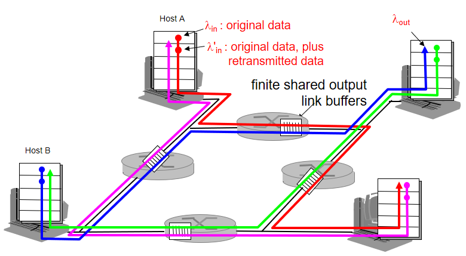

Notes for October 12th
Costs and causes of congestion
- Congestion scenario 1: Hosts A and B sending through the same router with infinite buffer
- Assume hosts A and B have identical sending rates which increase equally
- A and B each assume reliable data transfer, so each packet is sent exactly once
- As each sending rate increases between 0 and R/2 (half of the router's capacity), throughput is equal to the sending rate
- Packets still have transmission delay, so there is a buffer which grows faster as sending rate increases
- Once sending rate passes R/2, throughput cannot increase further, as the router is already at capacity, and the buffer begins to fill without bound
- In fact, once sending rate passes R/2, the buffer delay quickly approaches infinity
- Cost 1: increased delays
- Congestion scenario 2: Hosts A and B sending through the same router with finite buffer
- Packets which arrive at a filled buffer will be dropped, meaning the hosts will need to retransmit
- Cost 2: retransmissions required
- If the hosts could tell whether or not the buffer was full, no packets would be dropped at all!
- But that is not currently possible
- Assume the hosts only retransmit when a packet is known for certain to be lost
- This means the timeout would be rather unrealistically large
- In the book's example case, the offered load is R/2 (from each host)
- Of that, R/3 is new data, and R/6 is retransmitted packets
- In another example case, the host timed out prematurely, and a packet which had actually arrived was retransmitted
- Cost 3: large delays can cause unnecessary retransmissions
- Congestion scenario 3: Hosts A B C and D sending through overlapping two-hop paths with finite buffer
- Picture provided because it's a little difficult to explain

- When traffic is low, this scenario doesn't really have anything to worry about
- When traffic starts increasing, it gets complicated
- Traffic from A to C arrives at router 2 from router 1 at some throughput between 0 and R
- However, traffic from B to D also arrives at router 2
- And traffic from B to D gets there first
- If traffic from B to D is high, A to C packets from router 1 may be dropped
- If a packet is dropped by the second router in the route, the work done by the first router was wasted
- Cost 4: when a packet is dropped along a path, transmission capacity was wasted at each of the upstream links which forwarded that packet
There are no hugs in computer science
Home